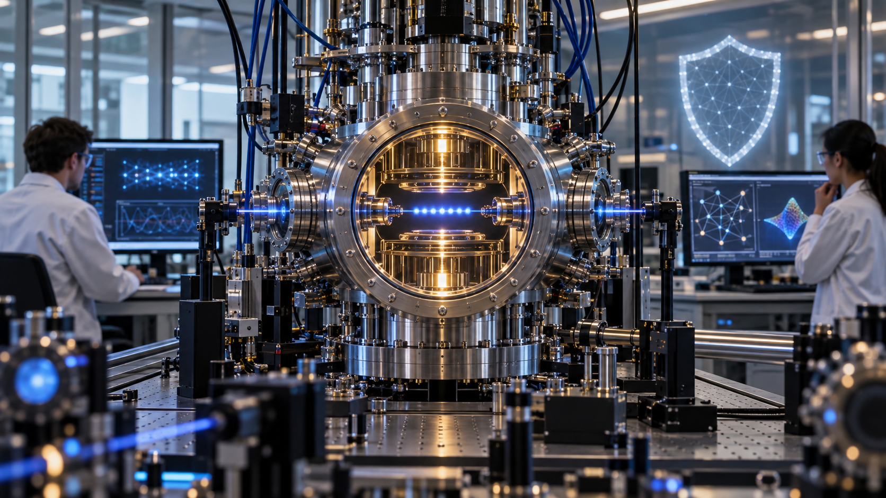
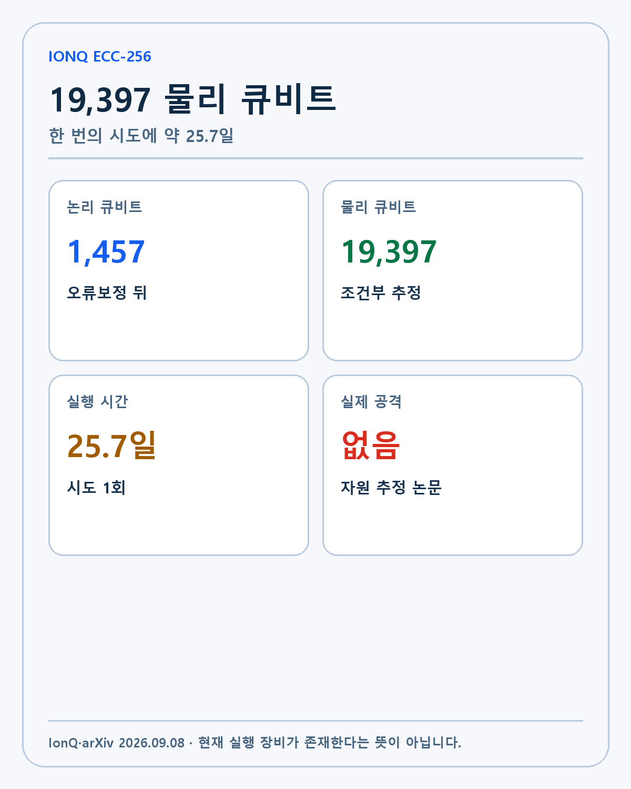
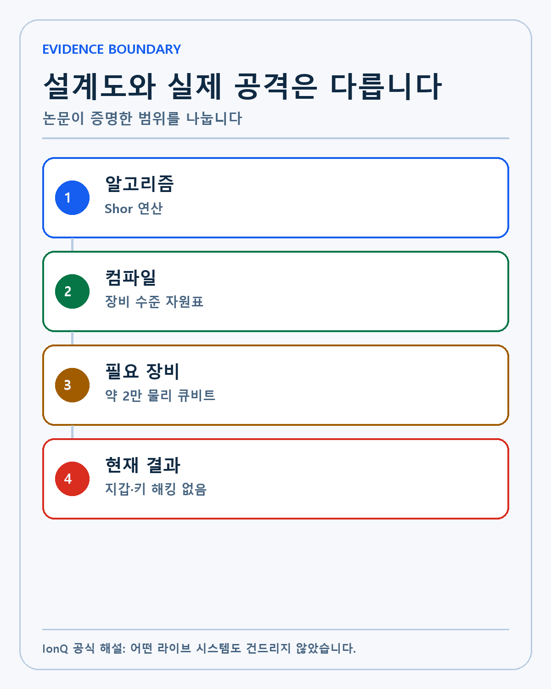
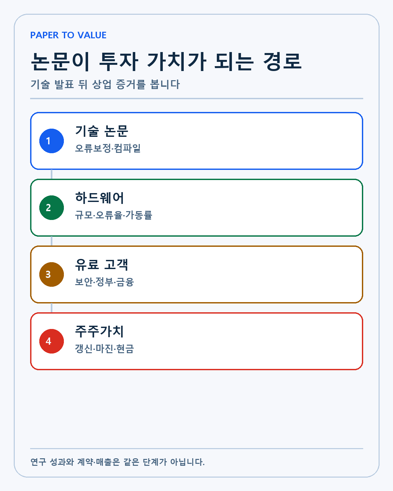
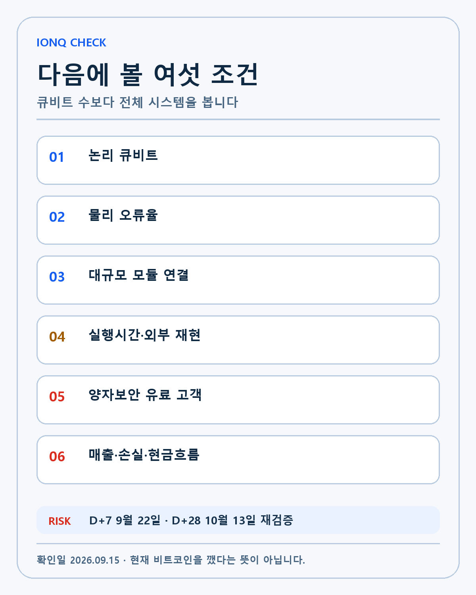

IONQ · DEEP RESEARCH
IonQ 256비트 ECC 자원 추정 심층 분석: 1만9397 물리 큐비트와 25.7일이 투자 논리에 주는 의미
IonQ의 256비트 ECC 자원 추정을 논리·물리 큐비트, 오류보정, 실행 장비, 양자보안 고객과 현금흐름으로 나눠 검증합니다.
IonQ의 256비트 타원곡선 서명 해독 자원 추정은 무엇을 증명했고 현재 비트코인 보안과 투자 가치에 어떤 의미가 있는가? 이 리서치는 같은 주제의 네이버 글을 늘여 쓴 문서가 아니라 제도 또는 기술의 작동 원리, 반대 논리, 무효화 조건과 투자자의 행동 순서를 별도로 검증합니다. 작성·검증 기준일은 2026-09-15입니다.

논문이 계산한 숫자부터 봅니다

확인된 출발점은 다음과 같습니다. IonQ의 공식 발표와 arXiv 기술 논문은 secp256k1 타원곡선 이산로그 문제를 대상으로 1,457 논리 큐비트와 19,397 물리 큐비트, 한 번의 시도에 약 25.7일이 필요하다고 추정합니다.
숫자를 투자 판단으로 옮기려면 한 단계가 더 필요합니다. 알고리즘 수준의 막연한 가능성을 오류보정과 이온트랩 장비 가정까지 내려 계산했다는 점이 의미입니다. 자원표가 구체적일수록 어떤 하드웨어 병목을 해결해야 하는지 검증할 수 있습니다. 이 변화가 편의나 기술 시연을 넘어 경제적 가치가 되려면 다음 단계의 증거가 필요합니다.
반대 방향의 설명도 함께 남겨야 합니다. 이 숫자는 실제 IonQ 장비에서 수행한 기록이 아닙니다. 논문의 아키텍처·오류율·게이트 시간과 디코더 가정이 충족될 때의 모델입니다. 한 방향의 장점만 남기면 가격 움직임을 설명하기는 쉬워도 투자 가설을 검증하기는 어려워집니다.
현재 공개 자료만으로 답할 수 없는 부분도 있습니다. 20,000개에 가까운 물리 큐비트를 같은 품질로 제어하는 장비의 완성 시점과 실제 가동률은 확정되지 않았습니다. 이 항목은 회사·거래소·규제기관의 후속 자료가 나오기 전까지 UNKNOWN으로 둡니다.
실제 행동은 다음 검증 순서로 제한합니다. 큐비트 수보다 오류보정 논리 큐비트, 게이트 충실도와 전체 실행시간을 함께 봅니다. 이후 결과가 사전 조건과 다르면 기존 판단을 고칩니다.
비트코인을 이미 깬 것이 아닙니다

확인된 출발점은 다음과 같습니다. IonQ 기술 해설은 어떤 지갑·키·네트워크도 건드리지 않았고 현재 이 공격을 실행할 장비도 존재하지 않는다고 명시합니다.
숫자를 투자 판단으로 옮기려면 한 단계가 더 필요합니다. 논문은 공격 시연이 아니라 자원 추정입니다. ‘가능한 계산 경로를 완전히 컴파일했다’와 ‘실제 개인키를 얻었다’는 서로 다른 주장입니다. 이 변화가 편의나 기술 시연을 넘어 경제적 가치가 되려면 다음 단계의 증거가 필요합니다.
반대 방향의 설명도 함께 남겨야 합니다. 설계도가 구체화될수록 장기 보안 전환을 늦출 이유는 줄어듭니다. 지금 당장 해킹이 아니라는 사실이 장기 위험이 0이라는 뜻도 아닙니다. 한 방향의 장점만 남기면 가격 움직임을 설명하기는 쉬워도 투자 가설을 검증하기는 어려워집니다.
현재 공개 자료만으로 답할 수 없는 부분도 있습니다. 실제 Q-Day가 언제 올지, 공격자가 어떤 장비와 오류보정 방식을 먼저 확보할지는 알 수 없습니다. 이 항목은 회사·거래소·규제기관의 후속 자료가 나오기 전까지 UNKNOWN으로 둡니다.
실제 행동은 다음 검증 순서로 제한합니다. 제목의 큰 숫자보다 논문이 증명한 범위와 하지 않은 일을 분리합니다. 이후 결과가 사전 조건과 다르면 기존 판단을 고칩니다.
Walking Cat과 qLDPC 가정이 핵심입니다
확인된 출발점은 다음과 같습니다. 논문은 IonQ가 제시한 Walking Cat 오류보정 아키텍처와 qLDPC 코드를 사용해 Shor 알고리즘의 연산을 물리 장비 수준으로 매핑합니다.
숫자를 투자 판단으로 옮기려면 한 단계가 더 필요합니다. 풀스택 기업이라는 IonQ의 주장은 하드웨어만이 아니라 알고리즘·컴파일·오류보정·제어를 한 설계 안에서 최적화할 수 있어야 힘을 얻습니다. 이 변화가 편의나 기술 시연을 넘어 경제적 가치가 되려면 다음 단계의 증거가 필요합니다.
반대 방향의 설명도 함께 남겨야 합니다. 좋은 코드와 컴파일 최적화가 대규모 장비 제작 난도를 없애지는 않습니다. 모듈 간 연결, 냉각·진공, 레이저 안정성과 오류 디코딩 비용이 남습니다. 한 방향의 장점만 남기면 가격 움직임을 설명하기는 쉬워도 투자 가설을 검증하기는 어려워집니다.
현재 공개 자료만으로 답할 수 없는 부분도 있습니다. 논문의 가정이 대규모 실장치에서 같은 성능으로 재현될지는 외부 검증이 필요합니다. 이 항목은 회사·거래소·규제기관의 후속 자료가 나오기 전까지 UNKNOWN으로 둡니다.
실제 행동은 다음 검증 순서로 제한합니다. 다음 기술 발표에서 논리 오류율과 모듈 규모, 실제 반복 실험 결과를 확인합니다. 이후 결과가 사전 조건과 다르면 기존 판단을 고칩니다.
암호 전환은 지금부터 진행됩니다
확인된 출발점은 다음과 같습니다. NIST의 첫 양자내성암호 표준 발표는 조직이 양자내성암호 전환을 시작하도록 요구하는 기준을 마련했습니다.
숫자를 투자 판단으로 옮기려면 한 단계가 더 필요합니다. 오래 보관해야 하는 데이터와 블록체인 자산은 공격 장비가 완성된 뒤 옮기기보다 키와 프로토콜을 미리 바꾸는 편이 안전합니다. 이 변화가 편의나 기술 시연을 넘어 경제적 가치가 되려면 다음 단계의 증거가 필요합니다.
반대 방향의 설명도 함께 남겨야 합니다. 모든 시스템이 같은 타원곡선과 같은 노출 구조를 쓰는 것은 아닙니다. 공개키가 드러나는 시점과 서명 방식, 전환 가능성이 위험을 바꿉니다. 한 방향의 장점만 남기면 가격 움직임을 설명하기는 쉬워도 투자 가설을 검증하기는 어려워집니다.
현재 공개 자료만으로 답할 수 없는 부분도 있습니다. 비트코인 네트워크의 구체적인 합의와 마이그레이션 일정은 IonQ 논문이 결정하지 않습니다. 이 항목은 회사·거래소·규제기관의 후속 자료가 나오기 전까지 UNKNOWN으로 둡니다.
실제 행동은 다음 검증 순서로 제한합니다. IonQ 투자와 비트코인 보안 대응을 한 문장에 섞지 않고 기술·정책·프로토콜을 따로 추적합니다. 이후 결과가 사전 조건과 다르면 기존 판단을 고칩니다.
투자 가치는 논문 다음 단계에서 생깁니다

확인된 출발점은 다음과 같습니다. IonQ는 양자컴퓨팅, 네트워킹, 보안과 위성 사업을 묶는 풀스택 전략을 추진합니다. 이번 논문은 연구팀의 기술 설계 능력을 보여 주는 자산입니다.
숫자를 투자 판단으로 옮기려면 한 단계가 더 필요합니다. 정부·금융·통신 고객에게 양자 위험 평가와 전환 서비스를 판매할 때 구체적인 자원 추정은 영업 자료보다 높은 신뢰를 줄 수 있습니다. 이 변화가 편의나 기술 시연을 넘어 경제적 가치가 되려면 다음 단계의 증거가 필요합니다.
반대 방향의 설명도 함께 남겨야 합니다. 논문 인용과 실제 계약은 다릅니다. 고객이 비용을 지불하고 갱신하며 매출총이익과 현금흐름이 개선돼야 주주가치로 이어집니다. 한 방향의 장점만 남기면 가격 움직임을 설명하기는 쉬워도 투자 가설을 검증하기는 어려워집니다.
현재 공개 자료만으로 답할 수 없는 부분도 있습니다. 이번 연구가 어떤 신규 계약과 제품 매출을 만들지 회사는 공개하지 않았습니다. 이 항목은 회사·거래소·규제기관의 후속 자료가 나오기 전까지 UNKNOWN으로 둡니다.
실제 행동은 다음 검증 순서로 제한합니다. 기술 발표 뒤 고객·계약 금액·서비스 제품·갱신을 확인합니다. 이후 결과가 사전 조건과 다르면 기존 판단을 고칩니다.
현재 재무 기준선과 함께 봅니다
확인된 출발점은 다음과 같습니다. IonQ 2026년 2분기 실적은 매출 8,010만달러와 전년 대비 287% 성장, 연간 매출 가이던스 2억8,000만~2억9,000만달러를 제시했습니다.
숫자를 투자 판단으로 옮기려면 한 단계가 더 필요합니다. 성장률은 높지만 인수와 하드웨어 확장에 필요한 비용도 큽니다. 기술 로드맵과 상업 매출의 속도를 같은 표에서 봐야 합니다. 이 변화가 편의나 기술 시연을 넘어 경제적 가치가 되려면 다음 단계의 증거가 필요합니다.
반대 방향의 설명도 함께 남겨야 합니다. 작은 매출 기반의 높은 성장률은 절대 규모와 현금 소진을 가릴 수 있습니다. SkyWater 통합이 제조 역량을 높이는 동시에 비용과 실행 위험을 키울 수 있습니다. 한 방향의 장점만 남기면 가격 움직임을 설명하기는 쉬워도 투자 가설을 검증하기는 어려워집니다.
현재 공개 자료만으로 답할 수 없는 부분도 있습니다. ECC 연구가 2026년 매출 가이던스에 포함된 계약을 직접 만들었는지는 확인되지 않았습니다. 이 항목은 회사·거래소·규제기관의 후속 자료가 나오기 전까지 UNKNOWN으로 둡니다.
실제 행동은 다음 검증 순서로 제한합니다. 매출, RPO, 조정 EBITDA 손실, 현금과 인수 통합 비용을 함께 봅니다. 이후 결과가 사전 조건과 다르면 기존 판단을 고칩니다.
제가 확인할 여섯 조건

확인된 출발점은 다음과 같습니다. 저는 IonQ를 보유하고 있지만 이번 논문만으로 투자 비중을 바꾸지 않습니다.
숫자를 투자 판단으로 옮기려면 한 단계가 더 필요합니다. 기술 해자 후보는 분명합니다. 알고리즘에서 물리 장비까지 연결한 구체성은 장기 경쟁력을 판단할 근거가 됩니다. 이 변화가 편의나 기술 시연을 넘어 경제적 가치가 되려면 다음 단계의 증거가 필요합니다.
반대 방향의 설명도 함께 남겨야 합니다. 2028 로드맵과 20,000 큐비트 장비는 아직 미래 조건입니다. 일정 지연이나 오류보정 성능 미달은 투자 논리를 약화합니다. 한 방향의 장점만 남기면 가격 움직임을 설명하기는 쉬워도 투자 가설을 검증하기는 어려워집니다.
현재 공개 자료만으로 답할 수 없는 부분도 있습니다. 실제 대규모 장비의 비용, 가동률과 고객당 경제성은 공개 데이터가 부족합니다. 이 항목은 회사·거래소·규제기관의 후속 자료가 나오기 전까지 UNKNOWN으로 둡니다.
실제 행동은 다음 검증 순서로 제한합니다. 논리 큐비트·물리 오류율·모듈 연결·실행시간과 외부 재현·유료 고객·현금흐름을 여섯 조건으로 추적합니다. 이후 결과가 사전 조건과 다르면 기존 판단을 고칩니다.
시나리오
강세 시나리오는 제도나 기술이 실제 사용량·고객·유동성과 현금흐름으로 연결되는 경우입니다. 기준 시나리오는 방향은 맞지만 사용과 상업화가 예상보다 천천히 진행되는 경우입니다. 약세 시나리오는 큰 발표가 반복돼도 핵심 성능·체결·계약과 경제성이 확인되지 않는 경우입니다.
무효화 조건
첫째, 공식 자료와 실제 운영 결과가 다르면 가설을 수정합니다. 둘째, 사용량이나 기술 지표가 늘어도 비용·손실·스프레드가 더 빠르게 악화하면 긍정적으로 해석하지 않습니다. 셋째, 후속 데이터가 없는 상태에서 가격만 움직이면 새로운 FACT가 아니라 시장 반응으로만 기록합니다. 넷째, 다른 시장이나 경쟁 기술이 더 낮은 비용과 높은 신뢰로 같은 문제를 해결하면 해자 가정을 낮춥니다. 다섯째, 다음 확인일에도 검증 가능한 업데이트가 없으면 우선순위를 낮춥니다.
비교표
| 구분 | 논문 추정 | 현재 경계 |
|---|---|---|
| 논리 큐비트 | 1,457 | 오류보정 뒤 자원 |
| 물리 큐비트 | 19,397 | 현재 실행 장비 아님 |
| 실행시간 | 약 25.7일 | 한 번의 조건부 시도 |
검증 체크리스트
- 논리 큐비트·오류율·모듈 연결을 확인합니다.
- 실행시간과 외부 재현을 확인합니다.
- 유료 고객·계약·현금흐름을 확인합니다.
작성자의 판단
저는 기술과 제도가 삶의 선택지를 넓히는 방향을 좋아하지만 새로움 자체를 투자 근거로 쓰지 않습니다. 기술, 해자, 운영 주체와 경영진, 성장률, 현금흐름의 순서로 확인합니다. 이 순서를 통과하지 못한 기대는 가격이 오르더라도 관찰 목록에 둡니다.
D+7인 2026년 9월 22일과 D+28인 2026년 10월 13일에 실제 데이터와 후속 공시를 다시 확인합니다. 이 글은 개인 리서치이며 특정 종목이나 금융상품의 매수·매도를 권유하지 않습니다.
자원 추정의 민감도
19,397 물리 큐비트와 25.7일은 고정된 자연법칙이 아니라 논문이 채택한 장비와 오류보정 가정의 결과입니다. 물리 오류율이 예상보다 높거나 논리 게이트를 만드는 비용이 늘면 필요한 큐비트와 실행시간도 커집니다. 반대로 컴파일, 디코더와 오류보정 코드가 개선되면 같은 문제를 더 적은 자원으로 풀 수 있습니다. 숫자 하나보다 어떤 변수가 결과를 크게 움직이는지 보는 편이 중요합니다.
이온트랩은 높은 게이트 충실도와 연결성에 강점이 있지만 연산 속도와 대규모 모듈 연결은 별도의 과제입니다. 수천 개에서 수만 개 물리 큐비트로 확장할 때 레이저 제어, 진공 안정성, 광학 연결과 오류 디코딩이 동시에 작동해야 합니다. 논문이 회로를 끝까지 컴파일했다는 사실은 병목을 구체화하지만 병목이 이미 해결됐다는 뜻은 아닙니다.
양자보안 전환과 IonQ 매출은 다릅니다
NIST가 양자내성암호 표준을 확정한 이유는 공격 장비가 완성된 날부터 준비하면 늦을 수 있기 때문입니다. 조직은 어떤 암호와 키가 어디에 쓰이는지 먼저 찾고, 새 알고리즘을 적용한 뒤 성능과 호환성을 검증해야 합니다. 오래 보관되는 데이터는 지금 수집해 나중에 해독하는 공격에도 노출될 수 있어 전환 기간 자체가 위험 요소입니다.
이 흐름은 IonQ에 양자 위험 평가, 네트워크 보안과 시뮬레이션 수요를 만들 수 있습니다. 그러나 산업 전체의 전환 비용이 IonQ의 매출로 자동 귀속되지는 않습니다. 회사 제품이 어떤 고객 문제를 해결하고 계약 금액과 갱신률이 어떻게 형성되는지 확인해야 합니다. 논문 다운로드와 언론 노출은 기술 신뢰의 증거일 수 있지만 회계상 매출은 아닙니다.
투자자가 볼 상업화 지표
기술 쪽에서는 논리 큐비트 수, 물리 오류율, 모듈 연결 규모, 반복 실행 성공률과 외부 재현을 봅니다. 제품 쪽에서는 보안·금융·정부 고객이 기술검증에서 유료 계약으로 이동하는지, 동일 고객이 사용 범위를 넓히고 갱신하는지 확인합니다. 재무 쪽에서는 매출 증가와 함께 매출총이익, 조정 EBITDA 손실, 영업현금흐름과 인수 통합비용을 봐야 합니다.
2026년 2분기 매출 8,010만달러와 287% 성장은 상업화가 진행 중이라는 기준선입니다. 작은 기저의 높은 성장률이므로 절대 매출과 비용을 함께 봐야 합니다. SkyWater 인수는 제조 역량을 넓히지만 자본집약도와 통합 위험도 높입니다. ECC 연구가 신규 고객과 반복 매출로 이어지는지 확인하지 못하면 기술 성과와 투자 성과를 분리해서 기록하겠습니다.
D+7과 D+28 복기 기준
9월 22일에는 논문에 대한 외부 기술 검토와 회사의 추가 설명을 확인합니다. 10월 13일에는 Superion과 오류보정 로드맵, 양자보안 고객·계약 업데이트가 나왔는지 다시 봅니다. 실제 대규모 장비의 비용과 가동률, ECC 연구의 직접 매출 기여는 공개 전까지 UNKNOWN입니다.
저는 IonQ를 보유하고 있지만 논문 하나로 비중을 바꾸지 않습니다. 알고리즘에서 장비까지 연결한 구체성은 해자 후보로 평가합니다. 로드맵이 반복 가능한 하드웨어와 유료 고객, 현금흐름으로 이동할 때 장기 투자 논리가 강화됩니다.
작성 방법
2026년 9월 15일 기준 공식 자료와 공시를 우선하고 사실·회사 전망·시나리오·UNKNOWN을 분리했습니다.
개인 투자 기록이며 특정 종목의 매수·매도를 권유하지 않습니다.